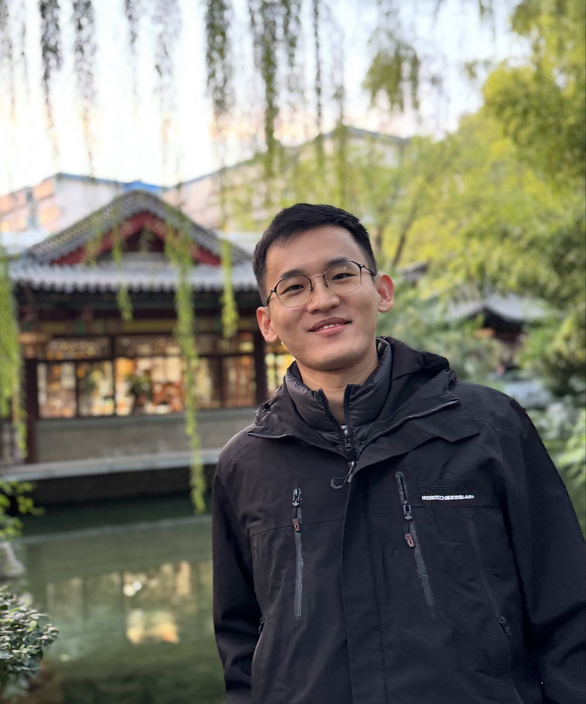

|
Bingchen Wang
I am an independent researcher working at the intersection of artificial intelligence and economics.
My work focuses on incentive design for collaborative and decentralized machine learning; preference alignment through preference reconstruction; and bias and mitigation in AI-mediated decision systems, especially in labour market contexts.
Previously, I worked as a research assistant at the National University of Singapore, focusing on mechanism design and AI for collaborative learning systems, and earlier at the University of Hong Kong on political economy projects.
I hold an MPhil in Economics from the University of Oxford, where I was fortunate to work under the guidance of Prof. David Hendry and Prof. Jennifer Castle and to contribute research within Climate Econometrics, which played an important role in shaping my research ethos and intellectual curiosity.
Before that, I earned a B.A. in Mathematics–Statistics from Columbia University and a B.Sc. (Hons) in Computing Mathematics from CityU Hong Kong.
Email /
CV /
Scholar /
LinkedIn /
Github /
Sites
|

|
Research Interests
My research sits at the nexus of artificial intelligence, economics and the social sciences.
I study how AI and ML systems interact with—and can be designed to better serve—human objectives, institutions, and incentives.
Thematically, my interests include:
- Mechanism design and incentives for AI systems / digital markets;
- AI alignment and preference modeling;
- Bias and mitigation in large language models (LLMs);
- Economics of AI and societal impact.
|
|
|
Prompts to Proxies: Emulating Human Preferences via a Compact LLM Ensemble
Bingchen Wang*, Zi-Yu Khoo, Bryan Kian Hsiang Low
Preprint out. Extended version currently under review, 2025
arXiv
Prompts to Proxies (P2P) develops a new way to align large language models with the diversity of human preferences.
Instead of training or prompt-tuning one model per demographic group, P2P builds a compact ensemble of proxy agents—each defined by structured prompts that span a latent preference space.
Inspired by revealed preference theory, it learns how to weight these agents to reproduce real survey data, offering a cost-efficient and theoretically grounded approach to pluralistic alignment, bridging AI alignment and social-scientific inference.
|
|
|
|
Paid with Models: Optimal Contract Design for Collaborative Machine Learning
Bingchen Wang*,
Zhaoxuan Wu,
Fusheng Liu,
Bryan Kian Hsiang Low
AAAI 2025
(Oral Presentation)
arXiv
/
code /
poster /
slides /
talk /
slides (B-side)
This work studies how to incentivize collaboration in machine learning when monetary rewards are unavailable.
Drawing on contract theory from economics, we model contributors’ incentives and information asymmetries to derive the optimal reward scheme theoretically and numerically in which trained models serve as payment.
The results highlight how well-designed contracts can pre-empt collaboration failures and create win-wins among heterogeneous participants.
|
|
Presentations
-
Let’s Talk About Trust — Paid with Models: Optimal Contract Design for Collaborative Machine Learning —
End-of-Project Meeting, Trusted CollabML Lab, Singapore (Invited Talk, Mar 2025)
Slides
-
Fine-Tuning LLMs with Noisy Data for Political Argument Generation —
Good-Data Workshop, AAAI-25, Philadelphia, USA (Presented on behalf of Svetlana Churina & Kokil Jaidka, Mar 2025)
Slides
-
Paid with Models: Optimal Contract Design for Collaborative Machine Learning —
AAAI-25, Philadelphia, USA (Oral Presentation, Mar 2025)
Slides /
Recording
|
Selected Awards
- Phi Beta Kappa Society — Columbia University (2019)
- Honor Society Fellow — School of General Studies, Columbia University (2018)
- Joseph and Norma Preziosi Endowed Scholarship — Columbia University (2018)
- Dean’s Scholarship — College of Science and Engineering, City University of Hong Kong (2017)
- HKSAR Government Scholarship — City University of Hong Kong (2015–2016)
- Chan Feng Men-ling Chan Shuk-lin ELC Scholarship — City University of Hong Kong (2014)
- Full Tuition Scholarship — City University of Hong Kong (2014)
- Dean’s List (all enrolled semesters) — Columbia University & City University of Hong Kong (2014–2018)
|
Beyond Research
Beyond research, I am deeply enamoured with art and culture, often finding inspiration in the hidden corners of cities.
This passion, intertwined with my academic interests, has evolved into a long-standing habit of reflecting on societal dynamics—occasionally inspiring me to write opinion pieces on pressing issues for local newspapers.
Read selected essays in my Outside the Box series.
|
© 2025 Bingchen Wang.
Original template by Jon Barron.
|
|

{kind=link}